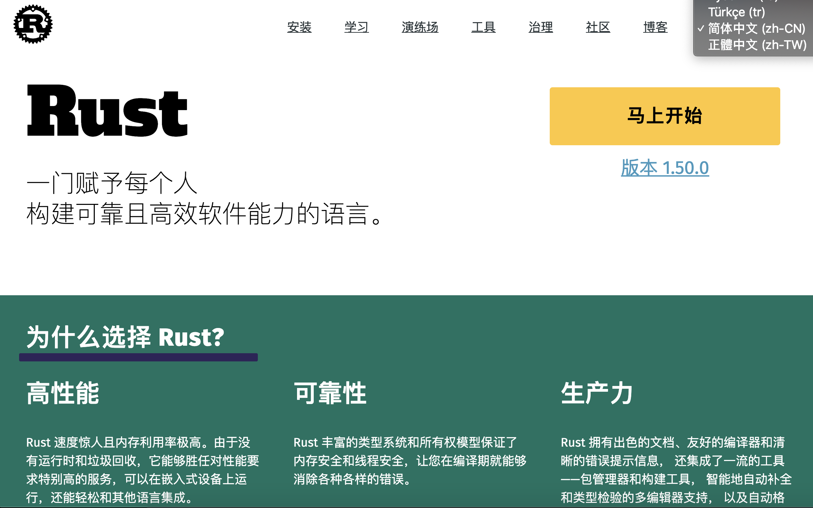
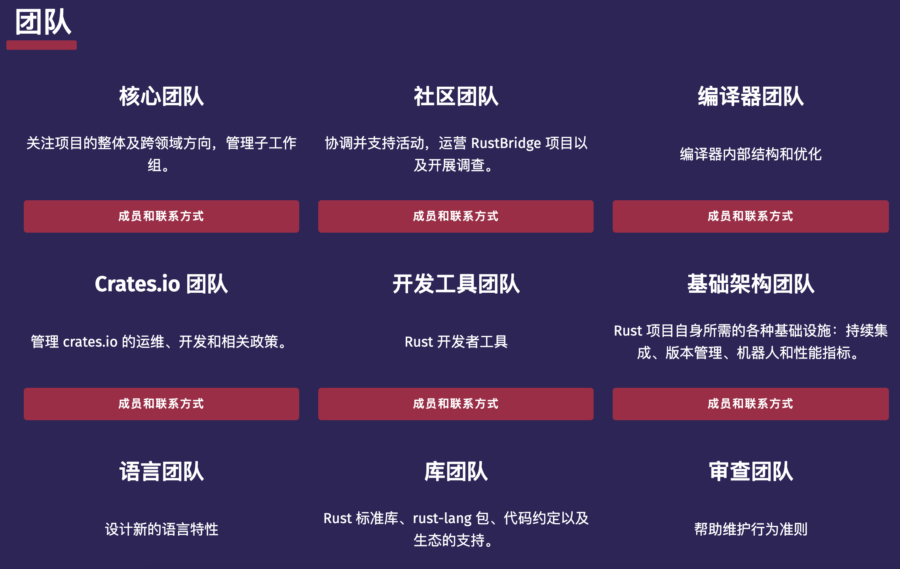
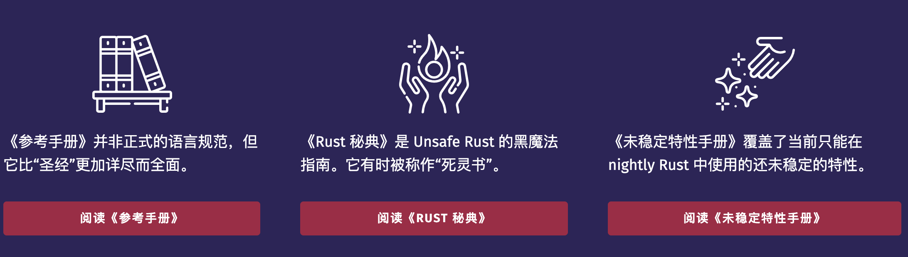

Rust 的第一印象
大家好，我是站长 polarisxu。
有些朋友应该知道，我最近在看 Rust，在朋友圈我发了一些关于 Rust 相关的东西。2021 年，会陆续写一些 Rust 相关的文章。今天先来一篇。
这篇文章不谈具体的语法，主要从总体上介绍下 Rust，更确切说是 Rust 给我的第一印象，文章（包括后续 Rust 的文章）会和 Go 对比着来，方便 Go 朋友们一起学习、交流。
01 官网
对于中国开发者来说，我认为 Rust 的官网相比 Go 官网至少有两大优势：
- 可以正常访问；
- 多国语言支持很好；

官网中文版：https://www.rust-lang.org/zh-CN/ ，而 Go 语言官网的中文版呢？残缺不全，不权威，不是核心团队组织领导弄的。
这些当然不是大问题，但一定程度上能反映出 Rust 社区的强大，由社区驱动 Rust 的发展，特别是 Mozilla 裁员，不少人担心 Rust。前些天 Rust Foundation 成立，成员包括 Mozilla、Google、Microsoft、华为、AWS 等，这表明，Rust 不会由某一个公司掌控，是完全社区驱动的，从官网的相关团队也可以看出一二：

此外还有相应的工作组，分工明确。
浏览官方，你会发现，和 Rust 相关的大部分内容都是官方团队在维护，比如 Rust By Example，竟然有专门的工作组。而 Go By Example 是一个 Go 爱好者写的。
只看官网，Rust 明显胜过 Go。
注：Go 除了 golang.org，还有 go.dev，这个站点在不断变强大。
02 学习文档
这里说的文档指官方的。
Rust 有一本“圣经”，The Rust Programming Language，即《Rust 程序设计语言》，这不是出版的图书，而是官方提供的供免费阅读。Go 也有“圣经”，不过不是官方免费阅读的。Go 官方提供的是 Effective Go，比“圣经”还是简单很多。
在工具方面的文档，Rust 和 Go 一样，文档挺详细的，但 Rust 在展现形式上，采用书籍的形式，更有利于阅读。
Go 有语言规范，而 Rust 目前还没有规范，只是有一个参考手册（reference）。
03 安装和工具链
如果是类 Unix 系统（MacOS、Linux 等），一条命令即可搞定 Rust 的安装。当然也可以和 Go 的安装方式一样，下载预编译好的安装包，进行安装。
Rust 提供的 rustup 可以方便的管理 Rust 自身，包括安装稳定版本、测试版本或 Nightly 版本，也可以方便的卸载 Rust。
Go 爱好者们都感慨其工具链的强大。Rust 也有强大的工具链，特别是 cargo（竟然有 go，哈哈哈哈），很强大，它既是包管理工具也是系统构建工具。
04 特性很多

上图是从 Rust 官网截取的，各种黑魔法、未稳定特性手册，这让人多少就感觉特性不少，还不断在加入。
05 欢迎一起学习
你准备好一起学习 Rust 了吗？都说 Rust 难，有没有自己实际学习看看，是不是真的那么难？也许可以验证一下学习能力？！哈哈哈~
手动内存管理，如 C、C++；带 GC，如 Java、Go。你想过还有第三种选择吗？一起开启 Rust 之旅吧！